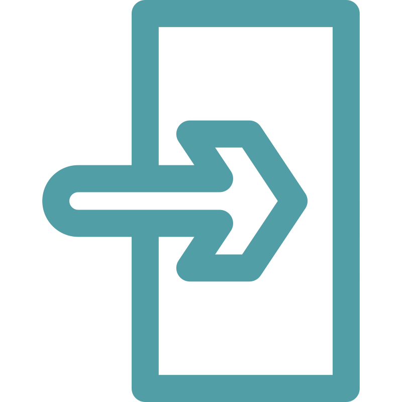

<mat-toolbar>
  <div class="w-100 flex-row justify-around align-center">
    <div class="title flex-row align-center">
      <button mat-icon-button  (click)="toggleSidenav()">
          <mat-icon class="m-0">menu</mat-icon>
      </button>
      <span class="menu pl-3">{{(menuService.activeParentMenuItem$ | async)?.title}}</span>
    </div>
    <div class="w-100 flex-row justify-end align-end">
      <button mat-raised-button class="icon-btn-square rectangle primary ml-3 mr-3" matTooltip = "İstifadəçi məlumatları">
        
        {{ normalizedFullName }}
      </button>
      <button mat-raised-button handleAccess [accessRight]="['Admin_User']" [isHide]="true" class="icon-btn-square accent logout" matTooltip = "Çıxış" (click)="logOut()" onclick="this.blur()">
        <div class="flex align-center">
          
        </div>
      </button>
      <button mat-raised-button handleAccess [accessRight]="['Other_User']" [isHide]="true" class="icon-btn-square accent sign-in" matTooltip = "Giriş" (click)="signIn()" onclick="this.blur()">
        <div class="flex align-center">
          
        </div>
      </button>
    </div>
  </div>
</mat-toolbar>
